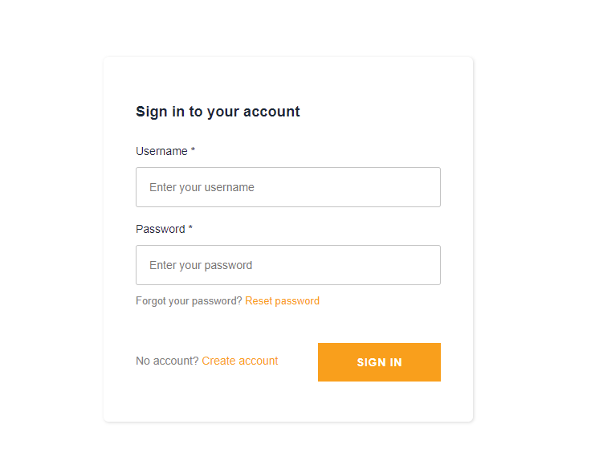

AWSを用いて、Todoアプリを作成しました。
サーバーを用いないサーバーレスアーキテクチャです。
GitHub
https://github.com/MuMa3679/todo
フロー

ユーザーが画面でデータを入力すると、そのデータをGraohQLのMutationで送信します。
するとAWS DynamoDBにデータが挿入されます。
そのデータをGraohQLのQueryで取得することで一覧表示することができます。
これらの構築は全てAWS Amplifyで構築しています。
環境について
AWS Amplify
AWS DynamoDB
AWS AppSync
AWS Cognito
Vue.js
このアプリはサーバーレスで開発するという目的で、バックエンド部分にはAppSyncを用いてGraphQLで作成しています。
認証機構にはCognitoを使用しています。そのためユーザーのパスワード管理などは一切扶養です。
フロント側はVue.jsを用いることでSPAとしています。
デモ
AWSを用いた開発の都合上、アプリ自体を公開すると料金が大変なことになる可能性がありますので、ソースコードの公開と動作している所を動画で公開します。
サインイン画面

サインイン画面は今回は自作せずにAmplifyのデフォルトで用意されているものを使っています。
ユーザーの作成は、この画面からもできますしCognitoのコンソール画面から作成することも可能です。
データ追加
データの挿入はフォームに「名前」「内容」を入力し追加ボタンを押すだけです。
完了に変更する
Todoを完了にするにはTodo自体をダブルクリックするだけで完了に移行します。
完了したTodoを削除する
完了したTodoを削除するのも完了したTodo自体をダブルクリックします。
サインアウト
サインアウトするには一番下のサインアウトボタンをクリックします。
技術的メモ
Amplifyの技術を多く使っている。Qiitaに少しまとめているが、フロントはvue.jsでGraphQLはAWS Amplify SDKを使用している。通信は非同期通信である。バックエンド部分はAmplifyが生成したスキーマをそのまま使用している。
認証部分に関しては、作成ユーザーのみが自分のTodoを見ることが出来るので、他のユーザーの場合は403が返ってくる。ログインしていないユーザーが使った場合でも(そもそもログインできないが)403が返ってくる。 ログインした際にユーザーのアクセストークン(IdToken)を保存している。